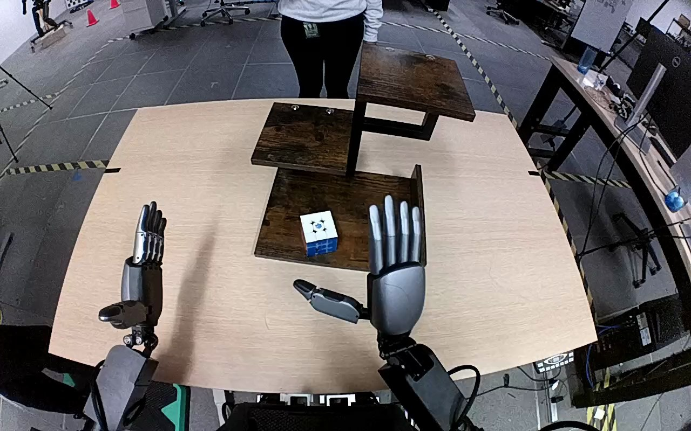

NVIDIA GR1 · 20
Video 20

Visual review action_review.json
{
"prompt_protocol": "humanoid_action_v1",
"prompt_provenance": "visually_authored_from_video_and_initial_frame",
"reviewed_contact_sheets": [
"sheet_001.jpg"
],
"inspected_frame_stride": 2,
"inspected_sampled_frame_count": 60,
"initial_scene": "Robot-mounted forward/downward view shows both arms attached on either side of the visible lower central torso. A white-topped, blue-sided cube rests on the bottom tier of a staggered three-level wooden shelf. A person stands across the table.",
"observed_sequence": [
{
"start_frame": 0,
"end_frame": 20,
"action": "Right hand initially rises open in front of the shelf, then begins descending toward the cube. Left hand stays open beside the table.",
"confidence": "high"
},
{
"start_frame": 21,
"end_frame": 46,
"action": "Right hand descends over the bottom-tier cube with fingers on its far/right side and thumb on its near/left side; cube remains on lower shelf.",
"confidence": "high"
},
{
"start_frame": 47,
"end_frame": 66,
"action": "Right fingers curl and opposing thumb closes around the cube, establishing a grasp while it remains near the lower surface.",
"confidence": "high"
},
{
"start_frame": 67,
"end_frame": 90,
"action": "Right arm lifts cube clear of lower shelf and raises it above the upper tier, holding it between thumb and fingers.",
"confidence": "high"
},
{
"start_frame": 91,
"end_frame": 109,
"action": "Right arm lowers cube toward the top shelf surface. The hand remains around cube; lower contact is obscured by thumb and palm. Person reaches to their own side and returns holding a separate smaller cube, without visible interaction with robot cube.",
"confidence": "high"
},
{
"start_frame": 110,
"end_frame": 119,
"action": "Right fingers extend/open while the cube remains at upper shelf level within the surrounding hand. No withdrawal or clear separation from cube appears. Left hand remains idle.",
"confidence": "high"
}
],
"arm_hand_roles": {
"right": "Active grasping, lifting and moving cube from bottom tier to top tier; fingers open at end while hand remains around cube.",
"left": "Open and stationary at left side of torso/table throughout, with no object or shelf support."
},
"anatomical_side_evidence": "Forward robot-mounted view looks outward over the visible central torso, with right forearm attached on the torso right and left forearm on torso left. Active arm enters from lower right and its inward-facing thumb opposes fingers around the cube, consistent with anatomical right hand. Side is established from body attachment and hand anatomy rather than image position alone.",
"coordination": "Single right-hand manipulation. Left hand provides no visible support. Person handles a separate small cube at the end; no handoff or contact with robot-held cube is observed.",
"terminal_state": "White-and-blue cube is at the top tier, surrounded by right hand with fingers opening. Right hand does not withdraw. Shelf contact and complete release are not clearly visible because the thumb/palm obscure lower cube contact. Left hand remains idle.",
"uncertainties": [
"Complete release and independent support by the top shelf are not visually established; final cube contact region is obscured by the hand.",
"Original instruction calls the object a Rubik's cube; visible object is a larger white-and-blue cube with a distinctive black/blue top marking, so prompt uses its appearance without claiming exact puzzle identity."
],
"annotation_discrepancies": [],
"evidence_frame_indices": [
0,
38,
60,
70,
80,
90,
104,
108,
114,
117,
119
],
"selected_execution_status": "incomplete",
"video_id": "20",
"dataset": "NVIDIA_GR1_100",
"dedicated_review_agent": "review_gr1_20",
"review_source_video": "NVIDIA_GR1_100/20/original/original.mp4",
"source_frame_count": 120,
"source_fps": 20.0,
"native_detail_frames": [
0,
38,
60,
70,
80,
90,
104,
108,
114,
117,
119
],
"world_model_prompt": "The robot grasps the white-and-blue cube on the wooden shelf's bottom tier with its right hand, closing its fingers against the opposing thumb. It lifts the cube clear, carries it up to the top tier, and lowers it to shelf level, beginning to open its fingers while its hand remains around the cube. Keep the camera fixed; preserve robot geometry, physically valid joint motion, and normal gripper opening and closing.",
"original_task_instruction": "Use the right hand to pick up rubik's cube from bottom tier of wooden shelf to top level of wooden shelf.",
"selected_segment": {
"start_frame": 0,
"end_frame_exclusive": 120,
"reason": "Complete original single-task reference; no cropping or trimming requested."
},
"source_video_sha256": "d11bb49e50511717cf7c62a0da2c54018b64efc1a051ee5d16a7ca826e43364f",
"review_completed_at": "2026-10-13T17:48:01.998671+00:00"
}